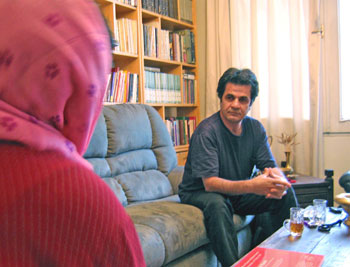

|
|

پرداخت هزینه در حرکتی اجتماعی چون کمپین روندی ناگزیر است
گفتگو با جعفر پناهي کارگردان سینما / دلارام علي و کاوه مظفري
شنبه3 شهریور 1386
جعفر پناهي متولد سال 1339 در شهرستان ميانه از شناخته شدهترين كارگردانان ايراني در جهان است. وي با ساختن دو فيلم دايره و آفسايد موفق به تصوير بخشي از محروميتهاي زنان جامعه ايران شد. اما هيچ يك از اين دو فيلم پروانه نمايش دريافت نكرد. جعفر پناهی از امضا کنندگان بیانیه کمپین یک میلیون امضا برای تغییر قوانین تبعیض آمیز و حامیان کمپین است. با ايشان در رابطه با مسئله زنان و کمپين يک ميليون امضاء به گفتگو نشستيم.

- آقاي پناهي، دو فيلم دايره و آفسايد با چه ايده و انگيزهاي از سوي شما ساخته شد؟ يعني چرا شما در اين دو فيلم روي موضوع زنان تمرکز کرديد؟
 من از اولين فيلمهايي كه شروع به كار كردم، مثل بادكنك سفيد به نوعي به مسئله «محروميت اجتماعي» اشاره داشتم، يعني تم و درون مايه اصلي كارم محروميتهاي اجتماعي بود. طبيعي است كه وقتي در جامعهاي مثل ايران كار ميكني، به محرومترينها كه ميرسي با مسئله زنان روبرو ميشوي. مقصودم اين نيست كه اين محروميتها فقط براي زنان است بلكه زنان را بيش از ساير گروهها درگير كرده است. البته در اين ميان مردان نيز در اين دايره محروميت گرفتار ميشوند چرا كه در هر صورت آنان نيز خانوادهاي دارند و در جامعهاي كه چنين نابرابريهايي در آن اعمال ميشود، دچار مشكلات گوناگون مي گردند. البته در هيچ يك از اين فيلمها ما به عنوان فيلمساز موضع گيري نكردهايم، واقعيتي را روايت كردهايم تا مخاطب دريابد كه محروميتها از كجا نشات ميگيرد. آيا اين محروميتها زاييده يك سياست غط است؟ از يك فرهنگ نادرست ناشي شده؟ ريشه در مذهب و سنت دارد؟ یا پیامدهای قوانین نابرابر است؟
من از اولين فيلمهايي كه شروع به كار كردم، مثل بادكنك سفيد به نوعي به مسئله «محروميت اجتماعي» اشاره داشتم، يعني تم و درون مايه اصلي كارم محروميتهاي اجتماعي بود. طبيعي است كه وقتي در جامعهاي مثل ايران كار ميكني، به محرومترينها كه ميرسي با مسئله زنان روبرو ميشوي. مقصودم اين نيست كه اين محروميتها فقط براي زنان است بلكه زنان را بيش از ساير گروهها درگير كرده است. البته در اين ميان مردان نيز در اين دايره محروميت گرفتار ميشوند چرا كه در هر صورت آنان نيز خانوادهاي دارند و در جامعهاي كه چنين نابرابريهايي در آن اعمال ميشود، دچار مشكلات گوناگون مي گردند. البته در هيچ يك از اين فيلمها ما به عنوان فيلمساز موضع گيري نكردهايم، واقعيتي را روايت كردهايم تا مخاطب دريابد كه محروميتها از كجا نشات ميگيرد. آيا اين محروميتها زاييده يك سياست غط است؟ از يك فرهنگ نادرست ناشي شده؟ ريشه در مذهب و سنت دارد؟ یا پیامدهای قوانین نابرابر است؟
در واقع آدم ها در فیلم های من نماينده يك طرز فکر در جامعه هستند و در عین حال تابع محدوديتهایي که از بالا بر آنان اعمال شده و گاه ياد گرفتهاند كه توجيهش كنند. زنداني و زندانبان هر دو در زندان بزرگترِ ناآگاهي محصور شدهاند. من معتقدم در بسياري از اوقات مردم اين محروميتها را نپذيرفتهاند و يا نميخواهند بپذيرند؛ اما به هر حال اين قانون است كه حاكم شده و گاه مردم در برابر آن نميتوانند كاري بكنند.
- نظر شما درباره کنشگری آدمیان چیست؟ مثلا کمپین یک میلیون امضا تاحدودی نشان دهنده تلاش برای تغییر موقعیت نابرابر زنان نیست؟ یعنی نوعی فراروی از توجیه وضعیت موجود ؟
 بله، امروزه متاسفانه در جامعه ايراني ما شاهديم كه قدرتِ حاکم، قانون را مينويسد و ميخواهد به هر وسيلهاي شده آن را اجرا كند. البته اين خاصيت قدرت هاي ايدئولوژيك است كه معتقدند اين است و جز اين نيست و چيزي كه هست نبايد تغييري بكند بلكه همه بايد آن را توجيه كنند. ما در ايران شاهديم كه حتي در رابطه با مسئلهاي مثل «كمپين يك مليون امضاء» برخي علما نظر مساعد دارند يا معتقدند ميتوان اين مسائل را به روز تفسير كرد، اما قدرت حاکم چنين تفاسيري را به رسميت نمي شناسد. زیرا نوعی فراروی از مرز توجیه است. من معتقدم كه اين خاصيت قدرت هاي ايدئولوژيك است كه به دنبال يك قالب ميگردند و اين قالب نبايد توسط هيچ حركتي تغيير كند. اينجاست كه حركتي مثل كمپين يك مليون امضاء رنگ و بوي سياسي ميگيرد و براي اعضاي آن در قبال جمعاوري امضاء، احكامي مثل تبليغ عليه نظام صادر ميشود.
بله، امروزه متاسفانه در جامعه ايراني ما شاهديم كه قدرتِ حاکم، قانون را مينويسد و ميخواهد به هر وسيلهاي شده آن را اجرا كند. البته اين خاصيت قدرت هاي ايدئولوژيك است كه معتقدند اين است و جز اين نيست و چيزي كه هست نبايد تغييري بكند بلكه همه بايد آن را توجيه كنند. ما در ايران شاهديم كه حتي در رابطه با مسئلهاي مثل «كمپين يك مليون امضاء» برخي علما نظر مساعد دارند يا معتقدند ميتوان اين مسائل را به روز تفسير كرد، اما قدرت حاکم چنين تفاسيري را به رسميت نمي شناسد. زیرا نوعی فراروی از مرز توجیه است. من معتقدم كه اين خاصيت قدرت هاي ايدئولوژيك است كه به دنبال يك قالب ميگردند و اين قالب نبايد توسط هيچ حركتي تغيير كند. اينجاست كه حركتي مثل كمپين يك مليون امضاء رنگ و بوي سياسي ميگيرد و براي اعضاي آن در قبال جمعاوري امضاء، احكامي مثل تبليغ عليه نظام صادر ميشود.
- آقاي پناهي، امروزه بسياري از هنرمندان ايراني از پرداختن به کنش اجتماعي پرهيز مي کنند. با شعارِ «هنر براي هنر»؛ بحث «هنر متعهد» طرد شده است؛ يعني هنرمندان خود را به شدت از فضاي فعاليت اجتماعي جدا کرده اند. اين اتفاق را چگونه ميبينيد؟
 نبايد فراموش كنيم كه بحت سياست با بحث فعاليت اجتماعي متفاوت است. مثلاً من هميشه ميگويم من فيلمسازِ سياسي نيستم نه اينكه در زندگي شخصيام هيچ ايده و عقيده سياسي ندارم، اما فيلم سياسي نميسازم. چرا كه معتقدم فيلم سياسي تاريخ مصرف دارد. اما فيلمِ اجتماعي فيلم عميق است، اين فيلم با تم سينمايي و هنري هرگز تاريخ انقضايش سر نميرسد. اگر من در فیلم هایم نگاه سياسي داشتم شما از بازیگرانی که دوستشان دارید بدتان ميآمد، اما وقتی می بینید که آنها نيز محكوم محروميتهاي اجبارياند، با آنها احساس همدلی می کنید. با فیلم اجتماعی شما لایه ها و طیف های گوناگون اجتماعی را می کاوید و بازنمایی می کنید. علاوه بر این آنچه يك سينماگر در فيلمش تصوير ميكند، لزوماً متاثر از فعاليتي اجتماعي نيست، بلكه واکنش هاي مشابهي است كه يك فيلمساز و عدهاي از فعالين اجتماعي در قبال يك مسئله دارند و لزوما می تواند در یک حرکت هماهنگ هم شکل نگیرد، عكس العملی مشابه باشد ميان آدمهايي كه دغدغههاي مشترك دارند و درجایی حتی برهم منطبق می شوند.
نبايد فراموش كنيم كه بحت سياست با بحث فعاليت اجتماعي متفاوت است. مثلاً من هميشه ميگويم من فيلمسازِ سياسي نيستم نه اينكه در زندگي شخصيام هيچ ايده و عقيده سياسي ندارم، اما فيلم سياسي نميسازم. چرا كه معتقدم فيلم سياسي تاريخ مصرف دارد. اما فيلمِ اجتماعي فيلم عميق است، اين فيلم با تم سينمايي و هنري هرگز تاريخ انقضايش سر نميرسد. اگر من در فیلم هایم نگاه سياسي داشتم شما از بازیگرانی که دوستشان دارید بدتان ميآمد، اما وقتی می بینید که آنها نيز محكوم محروميتهاي اجبارياند، با آنها احساس همدلی می کنید. با فیلم اجتماعی شما لایه ها و طیف های گوناگون اجتماعی را می کاوید و بازنمایی می کنید. علاوه بر این آنچه يك سينماگر در فيلمش تصوير ميكند، لزوماً متاثر از فعاليتي اجتماعي نيست، بلكه واکنش هاي مشابهي است كه يك فيلمساز و عدهاي از فعالين اجتماعي در قبال يك مسئله دارند و لزوما می تواند در یک حرکت هماهنگ هم شکل نگیرد، عكس العملی مشابه باشد ميان آدمهايي كه دغدغههاي مشترك دارند و درجایی حتی برهم منطبق می شوند.
آقاي پناهي، سئوال آخر اينكه شما به عنوان فيلمسازی كه براي ساختن فيلمِ هایی زن محور هزينههايي نيز متقبل شده ايد؛ هزينه دادن براي چنين حركتهايي را چگونه ميبينيد؟ اساسا چرا پرداختن به مسائل اجتماعی مثلا در قالب کمپین یک میلیون امضا یا در قالب یک اثر هنری و اجتماعی چون دایره هزینه به همراه دارد و آیا هزینه پردازی امریی عقلانی است؟
 بايد ببينيم اين خواسته ها و این مسائل در چه جامعهاي مطرح می شود، ما اکنون در جامعهاي باز گام برنميداريم، پس طبيعي است كه هرگونه حركتي كه در قالب ايدئولوژي حاکم نباشد، هزينه هايي دارد كه به نظر من بايد پرداخته شود. یعنی هزینه ای است که فعالان اجتماعی یا هرآن کس که دغدغه مسائل اجتماعی را دارند ناگزیر به پرداختن آن هستند. پرداخت اين هزينهها لزوماً خوب يا بد نيست، اما رونديست كه بايد اتفاق بيافتد. هيچ حركتي در جامعة غير باز بدون پرداختن هزينه به راحتي ممكن نيست و پرداختن اين هزينه به عهده كليه افراديست كه دغدغه مسائل اجتماعي دارند. حال، چه اين هزينه از طريق سانسور فيلم ها باشد، چه از طريق فشاري که بر کمپين يک ميليون امضاء وارد مي شد.
بايد ببينيم اين خواسته ها و این مسائل در چه جامعهاي مطرح می شود، ما اکنون در جامعهاي باز گام برنميداريم، پس طبيعي است كه هرگونه حركتي كه در قالب ايدئولوژي حاکم نباشد، هزينه هايي دارد كه به نظر من بايد پرداخته شود. یعنی هزینه ای است که فعالان اجتماعی یا هرآن کس که دغدغه مسائل اجتماعی را دارند ناگزیر به پرداختن آن هستند. پرداخت اين هزينهها لزوماً خوب يا بد نيست، اما رونديست كه بايد اتفاق بيافتد. هيچ حركتي در جامعة غير باز بدون پرداختن هزينه به راحتي ممكن نيست و پرداختن اين هزينه به عهده كليه افراديست كه دغدغه مسائل اجتماعي دارند. حال، چه اين هزينه از طريق سانسور فيلم ها باشد، چه از طريق فشاري که بر کمپين يک ميليون امضاء وارد مي شد.
- با تشکر.